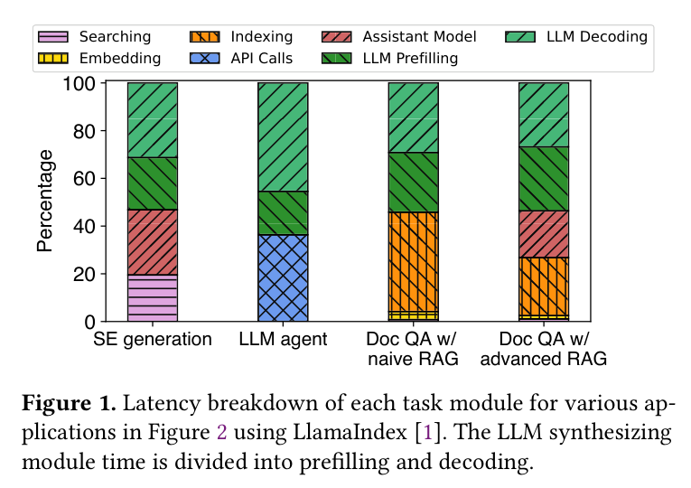
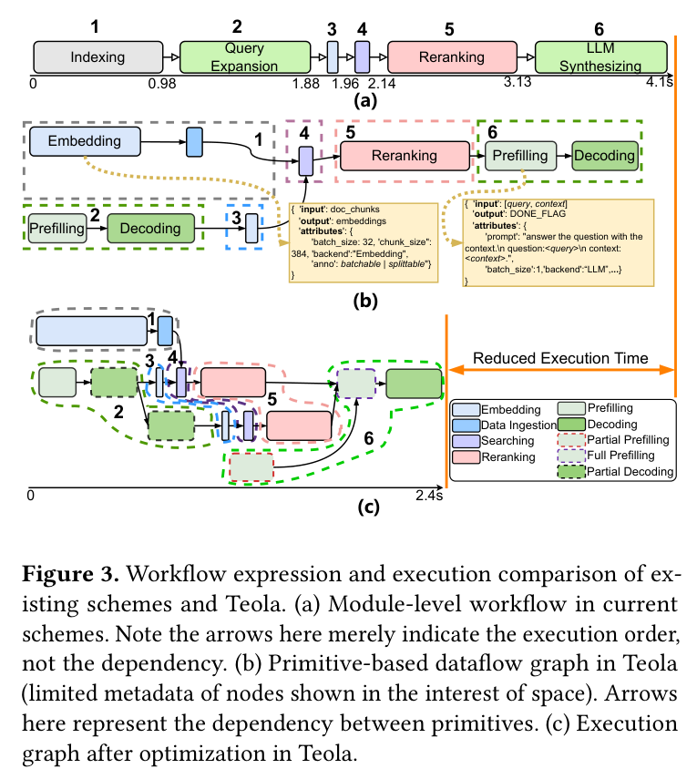
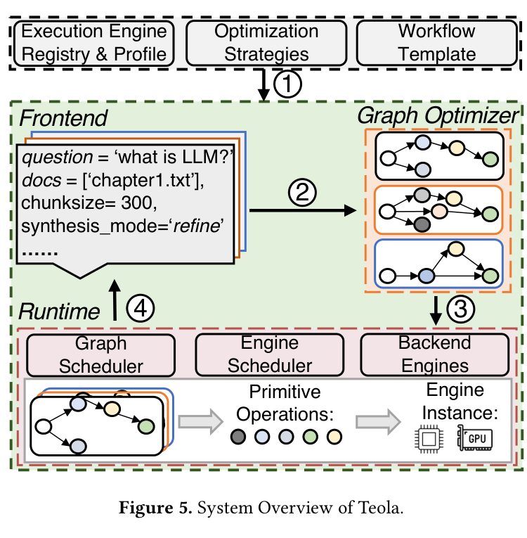
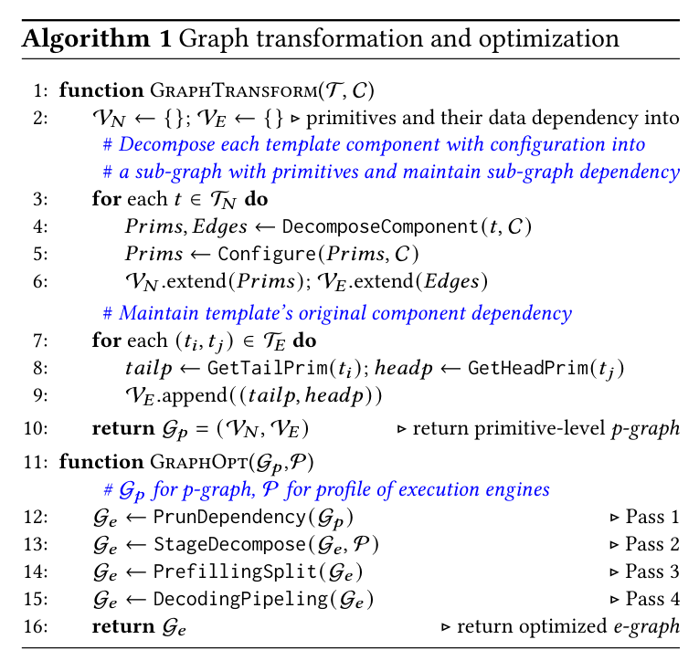
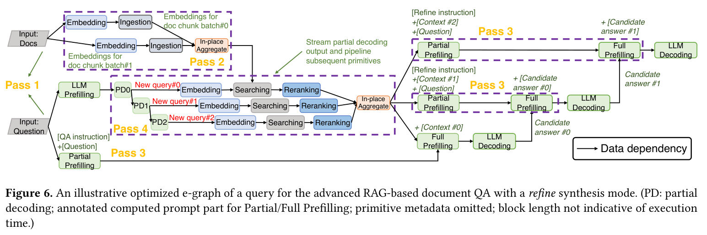
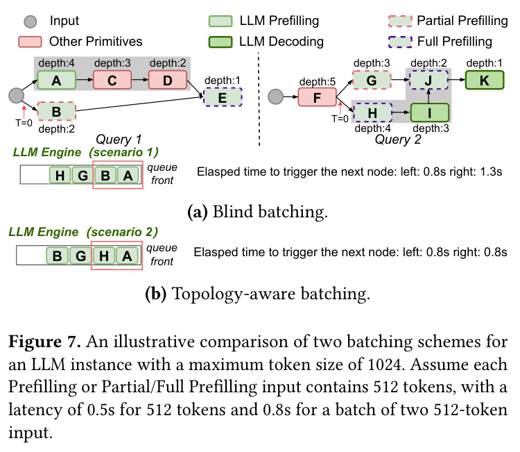
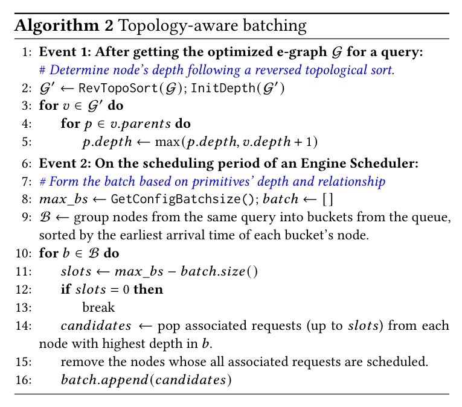
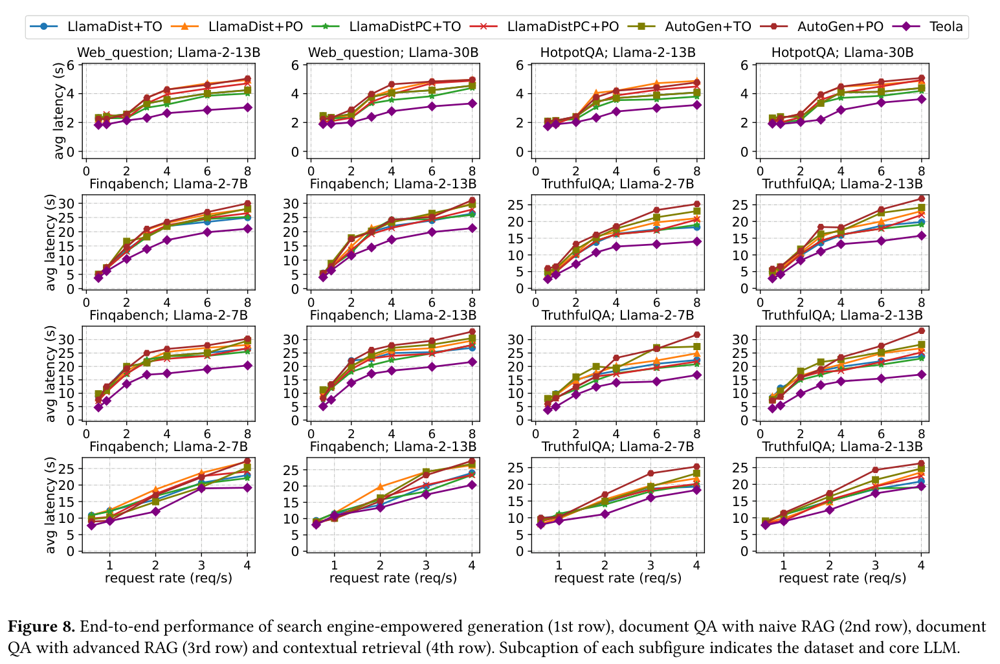
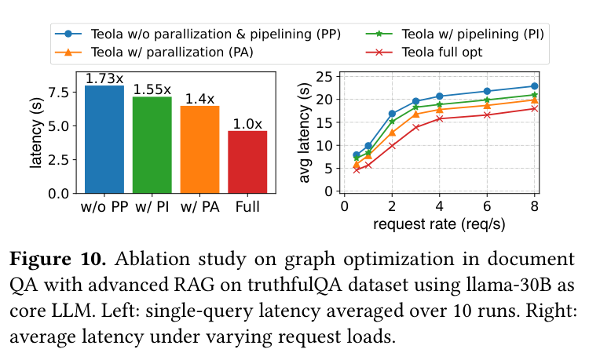
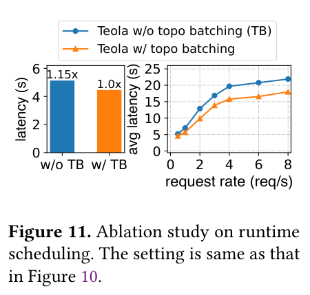

Towards End-to-End Optimization of LLM-based Applications with Ayo（ASPLOS 2025）
论文链接：ACM ASPLOS 2025 ｜ arXiv ｜ Code
论文预印本和正文使用 Teola，ASPLOS 2025 正式题目及开源项目改为 Ayo，两者是同一项工作。
应用级、直接 DAG-aware 的端到端编排系统。Ayo 不只调度 LLM request，而是把 LLM、Embedding、检索、数据库和 API 等操作共同表示为细粒度 dataflow graph，再跨模块进行并行、流水和 topology-aware batching。它比 Parrot 覆盖的操作类型更广，但主要面向结构预先定义的工作流。
Background / Motivation
真实 LLM 应用通常不是输入 Prompt 后只调用一次模，而是由多个模块共同组成。例如高级 RAG 会依次执行文档切分、Embedding、数据库写入、Query Expansion、向量检索、Reranking 和最终 LLM 生成。

Figure 1 表明，只优化 LLM 推理并不一定能明显缩短应用完成时间：在部分 Document QA 场景中，Searching、Embedding、Indexing 和 Reranking 等非 LLM 模块合计占端到端延迟的 50% 以上。
现有 LangChain、LlamaIndex 等框架通常将工作流写成若干高层 module，并让这些 module 按链式顺序调用各自的后端。这样存在三个问题：
- Module 是黑盒。 系统只知道
Indexing → Query Expansion → Reranking → LLM的模块顺序，不知道模块内部哪些操作具有真实数据依赖，因而把本可并行的工作串行执行。 - 无法跨 Module 流水。 一个模块通常要产生全部结果后，下一个模块才能开始。例如 Query Expansion 生成三个新查询时，传统框架会等三个查询全部生成完，才开始 Embedding 和检索。
- 后端优化目标与应用目标不一致。 Engine 只看到彼此独立的 request，通常优化单个请求延迟或总吞吐，却不知道哪些请求属于同一 DAG、哪个请求执行后能够推进更多后继节点。

Figure 3a 是传统 module-level 顺序，端到端执行约 4.1 秒。Figure 3b 将 module 展开后，可以看到 Indexing 中的 Embedding 与 Query Expansion 的 Prefill/Decode 并不存在数据依赖。Figure 3c 进一步并行独立分支、拆分 Prefill 并流水传递部分 Decode 输出，将示例执行时间缩短到约 2.4 秒。
论文还给出两类 scheduling mismatch：48 个属于同一 Indexing 操作的 Embedding request 若只用 batch size=4，需要 1.8 秒；知道它们需要整体完成后改用 batch size=16，虽然单个 batch 更慢，整组却在 1.35 秒完成。类似地，树形 LLM synthesis 根据 DAG 深度对同层请求组批，可将完成时间从 1.6 秒降至 1.15 秒。
Key Insight
Ayo 的核心是把编排粒度从粗粒度 module 下沉为 primitive：
| 层次 | 系统能够看到的信息 | 可以进行的优化 |
|---|---|---|
| Module-level | 模块执行顺序 | 模块内局部优化 |
| Primitive-level DAG | 每个操作的输入、输出、依赖、后端和 batch 属性 | 跨模块并行、流水、部分 Prefill 和拓扑感知组批 |
同一个应用模板会根据本次 Query 的文档数量、chunk 数量、RAG 配置和 synthesis mode，展开为一张 query-specific DAG。因此，Ayo 优化的不是固定的一条模块链，而是该次请求真正需要执行的细粒度操作图。
Core Design
Ayo 总体由两个组件组成：
- Graph Optimizer： 将高层 Workflow Template 展开为当前 Query 的 primitive-level DAG，并通过图变换生成更适合执行的 e-graph；
- Two-tier Runtime Scheduler： 上层 Graph Scheduler 按 e-graph 依赖释放节点，下层 Engine Scheduler 在具体 LLM/Embedding 等后端内进行 topology-aware batching。

离线阶段，开发者注册工作流模板、各类 execution engine 及其输入规模到延迟/吞吐的 profile；在线收到 Query 后，Graph Optimizer 生成并优化该 Query 的 DAG，Runtime 再按照依赖将节点分发给相应的后端 Engine。
1. Graph Optimizer：构造并优化执行图
1.1 从 Workflow Template 生成 p-graph
开发者仍然以较高层的组件定义应用，并用 >> 声明组件顺序，同时标注：
batchable：多个输入可以组成 batch，例如一组文档 Chunk 的 Embedding；splittable：输出可以被拆开并逐部分交给后继，例如结构化生成多个 Query；backend：该操作应交给哪个 execution engine；- 输入、输出、Prompt、batch size 等运行参数。
当具体 Query 到达后，Ayo 根据配置将每个组件展开成 primitive。例如一次包含三个 Context Chunk 的 refine synthesis，会变成三组相互依赖的 Prefill 和 Decode 节点。所有 primitive 的输入输出关系组成 p-graph（primitive graph）。

Algorithm 1 的执行过程可以分为两个阶段：
GraphTransform(T, C)遍历 Workflow Template 中的每个组件，根据本次 Query 的配置C调用DecomposeComponent，把组件展开成 primitive 子图；随后用Configure写入 Prompt、输入规模、batch 属性和目标 Engine，并把原模板中的组件依赖连接到子图的头尾节点，得到 p-graph；GraphOpt(Gp, P)根据后端 Engine profileP依次执行四个优化 Pass。每个 Pass 在图上匹配可优化的 primitive 模式并修改图结构，直到得到不再需要继续变换的 e-graph；相同工作流配置的优化结果可以缓存复用。
1.2 四个 Graph Optimization Pass
Pass 1：Dependency Pruning。 检查 primitive 的实际输入来源，删除只因 module 顺序而产生、并非真实数据依赖的边。这样，文档 Embedding/Indexing 可以与只依赖用户问题的 Query Expansion 同时开始。
Pass 2：Stage Decomposition。 如果一个 batchable primitive 的输入规模超过后端的 maximum efficient batch size，就把它拆成多个 sub-micro-batch。前一小批产生结果后，下游便可开始处理，不必等待整个大批次结束；需要汇总时在末尾加入 Aggregate 节点。这里是应用算子的流水拆分，不是把模型切成 Pipeline Parallel stages。
Pass 3：LLM Prefilling Split。 一个 Prompt 可能由 instruction、question、retrieved context 等部分组成，其中 instruction 和 question 已经到达，而检索结果仍未产生。只要已到达部分位于真实 Prompt 的前缀，Ayo 就先执行 Partial Prefilling 并保存 KV Cache；Context 到达后，再用 Full Prefilling 继续计算剩余 Token。
与 Sarathi/FastGen 的固定 Token chunk 不同：Sarathi/FastGen 主要为了控制每轮 GPU 工作量而按 Token 数切分；Ayo 根据工作流中各 Prompt 组成部分的就绪时间切分，使 Prefill 与上游检索并行。
Pass 4：LLM Decoding Pipelining。 对标为 splittable 的结构化输出，在 Decode 过程中监控 JSON 等结果。一旦一个完整新 Query 或句子生成，就立即交给下游 Embedding、Searching 和 Reranking；无需等本次 Decode 输出全部结束。

Figure 6 把四个 Pass 放在同一张高级 RAG e-graph 中：左侧两条输入分支通过 Pass 1 并行；文档 Embedding 通过 Pass 2 分批并流水写入；Query Expansion 通过 Pass 4 逐个释放三个新 Query；最终三轮 refine synthesis 又用 Pass 3 提前计算已经可用的 Prompt 前缀。
2. Two-tier Runtime Scheduler：从 DAG 到后端执行
Graph Optimizer 输出 e-graph 后，运行时并不是直接把整张图交给某个 Engine，而是采用上下两层调度：上层负责哪个 primitive 已经可以运行，下层负责同一个后端的哪些 primitive 应该组成 batch。
2.1 Graph Scheduler：按依赖释放节点（一般拓扑）
Runtime 上层的 Graph Scheduler 为每个 Query 保存 e-graph：
- 入度为 0 的 primitive 才是 ready node；
- ready node 被发给对应的 Engine Scheduler；
- 节点完成后，Scheduler 保存中间结果并降低后继节点入度；
- 新的入度 0 节点随即进入执行。
对于相邻且传输数据较大的节点，Ayo 会提前把后继节点发往目标 Engine 等待，并让前驱输出直接传给后继 Engine，避免数据先绕回中央 Scheduler。
2.2 Engine Scheduler：Topology-aware Batching
多个 ready primitive 可能同时请求同一个 LLM 或 Embedding Engine。普通 FIFO batching 只按到达顺序组批，却没有判断执行哪个节点更能推进整张 DAG。

Figure 7 中，LLM 一次最多放入两个 512-Token Prefill。Blind batching 选择队首 A、B，但 B 的后继 E 还在等待另一父节点 D，因此此时执行 B 不能马上推进后续；Query 2 的 G、H 也继续等待。Topology-aware batching 改为选择 A、H：A 推进 Query 1，H 同时推进 Query 2，使两张图下一节点都能在 0.8 秒后触发，而不是让 Query 2 等到 1.3 秒。

Algorithm 2 分两步：
- e-graph 生成后进行反向拓扑遍历。输出节点 depth 最小，越靠前且下游链越长的节点 depth 越大；
- 组批时先把同一 Query 的节点放入一个 bucket，在 bucket 内优先选择 depth 较大的 primitive，再按照各 bucket 最早到达时间依次填满 batch slots。先选总深度减少最多的节点。
这个 depth 是距离 DAG 末端还有多少层的结构信息，不包含各节点的真实执行时间，只考虑节点拓扑而不考虑执行时间。
Experiment
| 项目 | 设置 |
|---|---|
| LLM GPU | Gemma-2-2B、LLaMA-2-7B 使用 1×RTX 3090；LLaMA-2-13B 使用 2×RTX 3090；LLaMA-30B 使用 2×A800 80GB |
| 其他模型 | BGE-large-en-v1.5 Embedding、BGE-reranker-large；每个实例使用 1×RTX 3090 |
| 网络 | 服务器之间 100 Gbps |
| 精度 | 所有模型使用 FP16 |
| 应用 | 搜索增强生成、Naive RAG、Advanced RAG、Contextual Retrieval |
| 数据集 | WebQuestions、HotpotQA、FinQA、TruthfulQA |
| 到达方式 | 基于数据集合成请求，按照 Poisson 分布到达 |
Baseline：
- LlamaDist：作者用 Ray 实现的分布式 LlamaIndex，采用粗粒度 module chain；
- LlamaDistPC：人工并行独立 module，并加入 Prompt prefix cache 的增强版本（hash 匹配类似）；
- AutoGen：将检索、扩展、生成等功能组织为多个 Agent；
请求调度策略： - PO (Per-Invocation Oriented)：偏向单次调用低延迟； - TO (Throughput Oriented)：使用预先调好的大 batch/token size，偏向 Engine 总吞吐。
Result 1：端到端延迟

Figure 8 每一行对应一种应用，横轴是请求率，纵轴是平均端到端延迟，越低越好；每列使用不同数据集和核心 LLM。紫色的 Ayo/Teola 在绝大多数负载下最低。
| 应用 | 端到端效果 |
|---|---|
| 搜索增强生成 | 最高 1.79× 加速 |
| Naive RAG | 低负载最高 1.62×，高负载最高 1.67× |
| Advanced RAG | 低负载最高 2.09×，高负载最高 2.03× |
| Contextual Retrieval | 1.06×–1.59× 加速 |
在 Naive RAG 与 Advanced RAG 共置、每个应用各 3 req/s 的实验中，Ayo 相对较强的 LlamaDistPC baseline 仍获得 1.2×–1.55× 延迟改善。
Result 2：Graph Optimization Ablation

Figure 10 使用 Advanced RAG、TruthfulQA 和 LLaMA-30B：
w/o PP同时关闭 Parallelization 和 Pipelining，单 Query 延迟是完整 Ayo 的 1.73×；- 只开启 Pipelining（
w/ PI）或只开启 Parallelization（w/ PA）仍分别为完整方案的 1.55× 和 1.4×； - 同时启用四个 Pass 的
Full在单 Query 和不同请求率下都具有最低延迟。
Dependency Pruning/Partial Prefill 提供并行，Stage Decomposition/Partial Decode 提供流水。
Result 3：Topology-aware Batching 与开销

Topology-aware batching 在单 Query 中带来 1.15× 加速，在多 Query 负载下使平均延迟最多下降 19.2%。
细粒度拆分也会产生额外成本：
- Graph optimization 占端到端延迟约 1.3%–3%；
- Primitive 间通信占约 3.1%–6.2%；
- Partial + Full Prefilling 相比一次完整 Prefill 慢约 3.11%–12.12%，原因包括多次启动执行和重复搬运 KV Cache。
论文实验表明，跨模块并行和流水带来的收益大于这些额外开销。
Restriction
- Ayo 主要面向开发者预先定义结构的工作流。自主 Agent 的动态分支、循环和 self-reflection 无法在执行前得到完整 p-graph。
- Partial Prefilling、结构化 Partial Decoding 和特殊 batching 需要修改 vLLM 等后端，系统与 Engine 的耦合高。
- Topology-aware batching 只使用节点 depth，没有建模节点执行时间、slack 和真实关键路径；论文也将 critical-path scheduling 留作未来工作。
应用 DAG 信息如何下沉到具体 Engine 调度：先用 primitive-level graph 暴露跨 LLM 与非 LLM 操作的真实依赖，再用图变换创造并行/流水，最后以 topology-aware batching 推进 DAG。